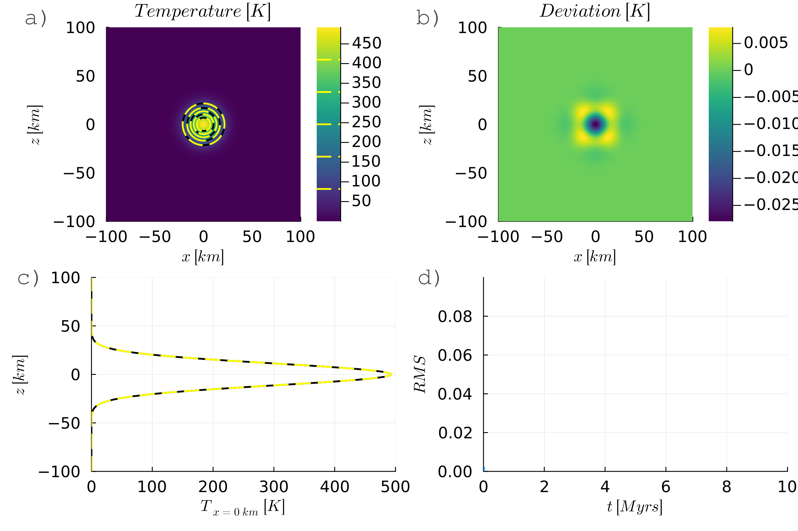

GeoModBox.jl
The Geodynamic Modelling ToolBox is a Julia package primarily intended for teaching purposes. It provides various finite difference, staggered discretization schemes to numerically solve the governing equations of two-dimensional geodynamic problems. These include the conservation equations of:
GeoModBox.jl includes a series of exercises and examples of geodynamically well-defined problems. The exercises are provided as Jupyter notebooks for students to complete. The theoretical background is documented here.
The solvers for each governing equation can be used separately or in combination for dimensional or non-dimensional problems, with only minimal modifications when calling the functions. For more informations on how to use the individual functions please see the list of functions or individual exmples. Some typical initial conditions, such as a linearly increasing temperature, are predefined and can be called using specific functions. In the following a brief explenation is given regarding the governing equations and the numerical method to solve them within the GeoModBox.jl. For more detailed information see the individual documentations.
Staggered Finite Difference
To properly solve the governing equations, a staggered finite difference scheme is chosen for the energy and momentum equations. A staggered grid enables a correct and straightforward implementation of boundary conditions and ensures conservation of stress between nodes in cases of variable viscosity. This requires certain parameters to be defined on different grids. For more information regarding the physical and numerical background, please refer to this.
Within the GeoModBox.jl, temperature, density, pressure, normal deviatoric stresses, and heat production rate are defined on the centroids. The deviatoric shear stresses are defined on the vertices, and velocities are defined between the vertices. Viscosity is required on both.
For further details on the implementation in GeoModBox.jl, see the individual documentations for each governing equation.
Energy Conservation Equation
In geodynamics, the energy is described by the temperature and needs to be conserved within a closed system. Within the GeoModBox.jl, the temperature conservation equation, or temperature equation, is solved using an operator splitting method, that is, first the advective part of the temperature equation is solved, followed by the diffusive part.
Heat Diffusion Equation
GeoModBox.jl provides several finite difference schemes for solving the diffusive part of the time-dependent or steady-state temperature equation, including radioactive heating, in both 1-D and 2-D. The solvers are located in src/HeatEquation. Currently, only Dirichlet and Neumann thermal boundary conditions are supported. Most functions assume constant thermal parameters (with the exception of the 1-D solvers and the 2-D, iterative implicit solver, called iterative defection correction method).
Heat Advection Equation
GeoModBox.jl provides various methods to advect properties within the model domain. The routines are structured so that any property defined on centroids (including ghost nodes at all boundaries) can be advected using the described solvers. Using passive tracers, one may choose to advect either the absolute temperature or the phase ID.
Momentum Conservation Equation
On geological timescales, Earth's mantle and lithosphere deform slowly due to their high viscosity, allowing us to neglect inertial forces. This simplifies the Navier-Stokes equation into the Stokes equation. GeoModBox.jl provides two main methods to solve the Stokes equation in 1-D and 2-D: the direct method and the defection correction method, applicable for both constant and variable viscosity fields. Velocity and pressure are defined on a staggered grid, and ghost nodes are included to ensure proper implementation of free-slip and no-slip boundary conditions.
Benchmarks and Examples
The following are visualizations of selected examples provided by GeoModBox.jl. For further details, refer to the documentation linked in each title. Each runtime can be found in the documentation of the examples and exercises.
Gaussian Temperature Diffusion

Figure 1. Gaussian Diffusion. Time-dependent, diffusive solution of a 2-D Gaussian temperature anomaly at a resolution of 120 × 120, using the special solver with the Crank-Nicholson discretization, compared to the analytical solution. a) 2-D temperature field with numerical isotherms (solid black) and analytical isotherms (dashed yellow). b) Total deviation from the analytical solution. c) 1-D y-profile along $x = 0$. d) Root Mean Square (RMS) total deviation over time.
<img src="./assets/examples/Diffusion/Gaussian_ResTest.png" width="700">
Figure 2. Resolution test. a) Maximum RMS error $\varepsilon$, b) maximum temperature, and c) mean temperature for various finite difference schemes and resolutions using the special case, linear solver (single left-matrix division) for the diffusion example shown above.
Rigid-Body-Rotation
<img src="./assets/examples/Advection/2DadvectioncircleRigidBodyupwind100100nth1.gif" width="700">
<img src="./assets/examples/Advection/2DadvectioncircleRigidBodysemilag100100nth1.gif" width="700">
<img src="./assets/examples/Advection/2DadvectioncircleRigidBodymarkers100100nth1.gif" width="700">
Figure 3. Rigid-Body-Rotation. Time-dependent advection of a rotating circular temperature anomaly using the upwind (top), semi-Lagrangian (middle), and tracer (bottom) methods on a 100 × 100 grid. Within a circular region, the velocity field follows rigid rotation; outside, it is zero.
Falling Block
<img src="./assets/examples/Stokes/Fallingblockηr0.0tracers_DC.gif" width="700">
Figure 4. Isoviscous Falling Block. Time-dependent simulation of an isoviscous falling block at 50 × 50 resolution with 9 tracers per cell. The solver handles variable viscosities. Tracers advect the phase ID, which is used to interpolate density and viscosity on centroids and vertices, respectively.
<img src="./assets/examples/Stokes/FallingBlockSinkingVeloctracersdirectarithmetic.png" width="700">
Figure 5. Falling Block Sinking Velocity. Block sinking velocity vs. initial viscosity ratio $\eta_r$, using the same setup as above.
<img src="./assets/examples/Stokes/FallingBlockFinalStagetracersdirectarithmetic.png" width="700">
Figure 6. Falling Block Benchmark. Tracer distribution at the final stage for selected viscosity ratios $\eta_r \ge 0$.
Rayleigh-Taylor Instability (RTI)
RTI Growth-rate Benchmark (Ramberg, 1968)
<img src="./assets/examples/Stokes/RTIηr-6.0tracersDC.gif" width="700">
Figure 7. Rayleigh-Taylor Instability. Evolution of two-layered Rayleigh-Taylor instability.
<img src="./assets/examples/Stokes/RTIGrowthRatenmx5nmy5MarkerInterpolationarith.png" width="700">
Figure 8. Growth rate of an initial cosinusoidal perturbation in a two-layer system across various wavelengths $\lambda$. The growth rate is arbitrarily scaled using $b_1$ and $b_2$ for visualization, following the approach of Gerya (2019). The lines are the analytical solutions for different viscosity ratios $\eta_r$ and the markers show the corresponding numerical results for models with decreasing amplitudes (black - 100 m, red - 10 m, yellow - 1 m).
RTI Benchmark (Van Keken et al., 1997)
<img src="./assets/examples/Stokes/VanKeKenBenchmarkηr0.0tracersDCarith.gif" width="700">
Figure 9. Evolution of the dimensional Van Keken benchmark. The panels show the density field, tracer distribution, viscosity, and velocity magnitude together with the velocity vectors. The initially perturbed interface evolves into the characteristic Rayleigh-Taylor instability as the denser lower material sinks beneath the lighter upper layer.
Viscous Inclusion Benchmark
<img src="./assets/examples/Stokes/ViscousInclusion_Summary.png" width="700">
Figure 10. Comparison between the numerical and analytical solutions for the horizontal velocity, vertical velocity, and pressure fields. The third column shows the corresponding relative error distributions. The largest errors are localized at the viscosity interface, where the material properties are discontinuous, while excellent agreement is obtained throughout the remainder of the domain.
Thermal Convection Models
Blankenbach Benchmark (Blankenbach et al., 1989)
<img src="./assets/exercises/13a.gif" width="700">
Figure 11. Isoviscous, bottom-heated thermal convection for $Ra_b = 10^6$ with a resolution of 100×100. The initial condition is a sinusoidally perturbed conductive temperature field. The background color shows the non-dimensional temperature, overlaid by temperature isolines (every 0.05) and centroid velocity vectors. Heat diffusion is solved using the defect correction with a Crank–Nicolson discretization, the Stokes equation using the defect correction method, and temperature advection with the semi-Lagrangian method.
<img src="./assets/exercises/13g.png" width="700">
Figure 12. Summary of the resolution study for a basal Rayleigh number of $Ra_b = 10^6$. (a) Final dimensionless temperature field with superimposed velocity vectors and temperature contours for the third model. (b) Vertical temperature profile through the center of the model. The black squares denote the published locations of the minimum and maximum temperatures reported by Blankenbach et al. (1989). (c) Evolution of the Nusselt number ($Nu$) and root-mean-square velocity ($V_{\mathrm{RMS}}$) toward steady state. The dashed red lines indicate the benchmark values. (d) Grid convergence of the Nusselt number, root-mean-square velocity, and mean temperature as a function of the inverse number of grid cells, $1/(n_x n_y)$. The dashed red lines correspond to the benchmark values.
<img src="./assets/examples/Convection/BlankenbachVarEta1.00e+04100100_blankenbach.gif" width="700">
Figure 13. Evolution of the two-dimensional Blankenbach benchmark with temperature-dependent viscosity for a resolution of $100 \times 100$. The left panel shows the dimensionless temperature field with superimposed velocity vectors, while the right panel displays the logarithm of the normalized viscosity, $\log_{10}(\eta/\eta_0)$. As the initially conductive state becomes unstable, cold, highly viscous material accumulates beneath the upper boundary, whereas the hot interior develops a pronounced low-viscosity region that promotes vigorous convection.
Mixed Thermal Convection Models
Bottom Heated Convection
<img src="./assets/examples/Convection/BottomHeated1.0e6400100_lineara.gif" width="700">
Figure 14. Bottom-Heated, Isoviscous Convection for $Ra_b = 10^6$, resolution 400 × 100. Solvers: defect correction(momentum), semi-Lagrangian (advection), defect correction + Crank-Nicolson discretization (heat diffusion). Boundary conditions: Dirichlet (top/bottom), Neumann (sides), free-slip (velocity, all sides).
Internally Heated Convection
<img src="./assets/examples/Convection/InternallyHeated1.0e6400100_lineara.gif" width="700">
Figure 15. Internally Heated Convection for $Ra_Q \approx 1.5 \cdot 10^7$, resolution 400 × 100. Same setup as above, but with Neumann boundary at the bottom (zero heat flux) and constant internal volumetric heat production $Q \approx 15$.
Mixed Heated Convection
<img src="./assets/examples/Convection/MixedHeated1.0e6400100_lineara.gif" width="700">
Figure 16. Mixed-Heated Convection for a basal and internal-heating Rayleigh number of $Ra_b = 10^6, Ra_Q \approx 1.5 \cdot 10^7$, resolution 400 × 100. Combination of the above two setups (bottom heating + internal heating).
Bottom Heated with temperature-dependent viscosity
<img src="./assets/examples/Convection/BottomHeatedVE1.0e6400100lineara.gif" width="700">
Figure 17. Bottom-Heated, variable viscosity convection for $Ra_b = 10^6$, resolution 400 × 100. Same setup as above, but with a temperature-dependent, Arrhenius-like viscosity resulting in a viscosity contrast of five orders of magnitude in a non-dimensional temperature range of 0-1.
Thermo-mechanical Shear Localization
<img src="./assets/examples/ShearHeating/ShearHeatingBands_2D.gif" width="700">
Figure 18. Evolution of thermo-mechanical shear localization in the pure-shear benchmark using shear heating. The model employs the general defect-correction energy solver with a Crank–Nicolson discretization ($\theta = 0.5$), tracer-based temperature advection, and a grid resolution of $200 \times 100$ cells. Temperature-dependent, non-linear dislocation-creep viscosities are combined using arithmetic averaging for the phase mixing, centroid-to-vertex interpolation, and marker-to-grid interpolation. The animation shows the evolution of the second invariant of the strain-rate field (background colors), the weak inclusion (black contour), the evolving shear band (white contour), and the fixed diagnostic profile (red line) used to quantify strain-rate amplification, shear-band thickness, and shear-heating-induced temperature increase.
<img src="./assets/examples/ShearHeating/FinalBenchmarkFigurefixedarithmetic_arithmetic.png" width="700">
Figure 19. Evolution and quantitative characterization of thermo-mechanical shear localization for the fixed-profile diagnostic with arithmetic phase and vertex viscosity averaging. Panels (a)–(c) show the second invariant of the strain-rate field at approximately 5%, 15%, and 25% bulk shortening, including the weak inclusion and the profile used to evaluate localization. Panels (d)–(f) show the the strain-rate amplification, temperature increase, shear-band orientation, and shear-band thickness as functions of bulk shortening. Line color distinguishes the upwind, semi-Lagrangian, and tracer advection methods, while line style distinguishes backward Euler (θ = 0), Crank–Nicolson (θ = 0.5), and forward Euler (θ = 1) within the general defect-correction formulation.